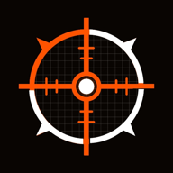
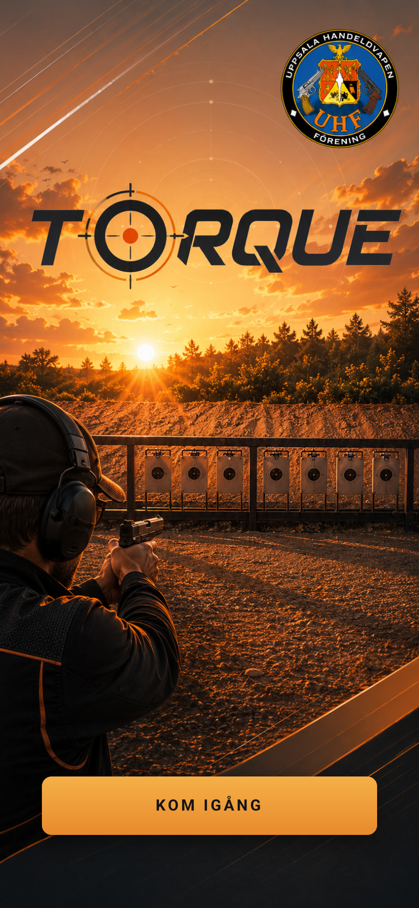
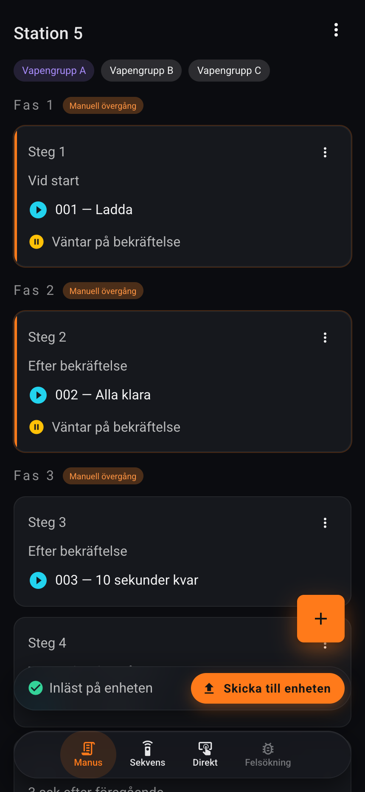
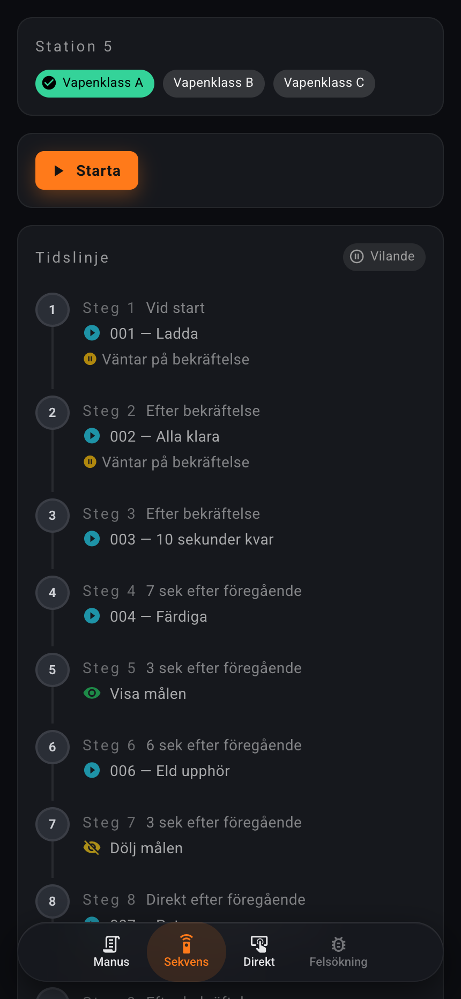
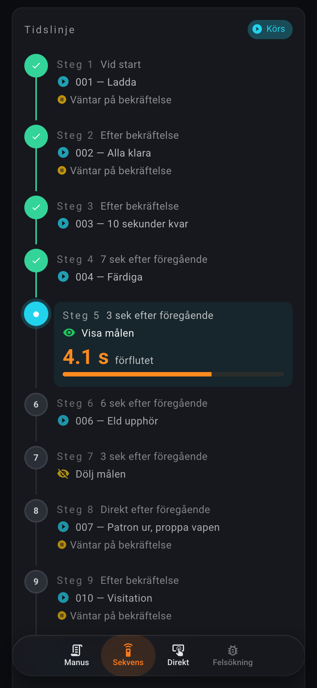
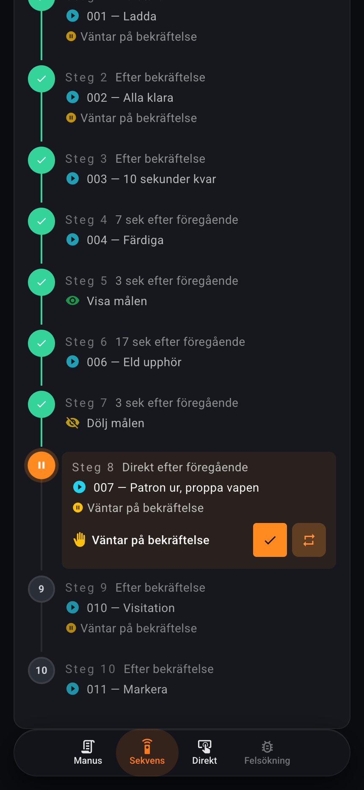
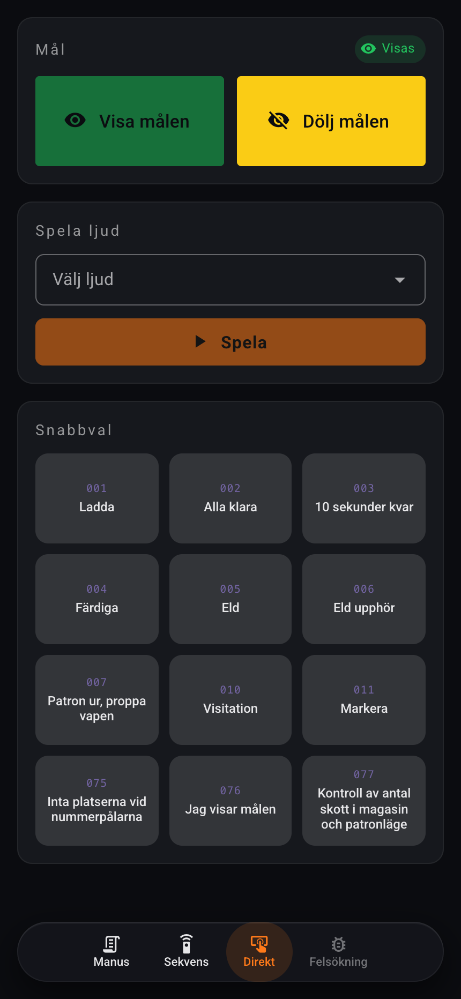
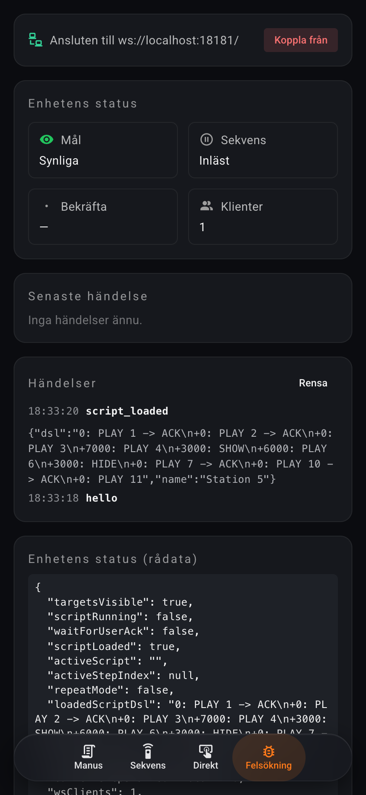

Översikt över användargränssnitt, manussystem, körlogik och kommunikation mellan webbklient och vridmålskontroller. Hårdvarudetaljer och fysisk uppbyggnad ligger i den separata hårdvarudokumentationen.
Torque är en vridmålsstyrning med tre uppgifter: visa eller dölja vridmålen via hårdvaru-aktuatorer, spela upp ljudkommandon, och köra tidsstyrda sekvenser (här kallade manus) som kombinerar dessa moment med pauser och bekräftelser från en skjutledare.
Hela systemet styrs från en webapp som tillhandahålls av kontrollern. Flera klienter kan vara anslutna samtidigt och se samma körning live.

Den här delen följer flödet en skjutledare går igenom: bygga eller hämta ett manus, skicka det till kontrollern, och slutligen köra det. Den beskriver vad varje flik gör och hur de hänger ihop. Tekniska detaljer (datastrukturer, protokoll, timing) följer i nästa del.
Manus-fliken är där du bygger och hanterar manus. Ett manus är en namngiven sekvens som består av steg, indelade i en eller flera vapenklasser (varianter av samma manus med olika tider).
Varje steg har:
0 ms, 5000 ms …)
eller relativt (+500 ms) till föregående steg inom samma fas. En relativ
tid räknas från när det föregående steget påbörjades, inte när det avslutades.
Många manus har samma uppbyggnad men olika tider beroende på vapenklass. I stället för att skapa flera nästan-identiska manus stöder Torque varianter inom ett och samma manus. Du växlar mellan dem genom att trycka på en chip i radens översta del. När du sänder manuset till kontrollern är det den för tillfället valda variantens DSL som skickas över.
Tre-prickars-menyn (uppe till höger) erbjuder följande operationer:
Den klistrade fältet längst ned (en flytande "pill") visar kontrollerns status och har knappen Skicka till kontrollern. Den kompilerar manuset till DSL och laddar det på kontrollern. Manuset körs inte direkt — start sker från Sekvens-fliken.
Statusindikatorn visar fyra lägen: Inte ansluten Klar att skicka Inläst på kontrollern Sekvens körs — Skicka avstängt.
load-anrop så att en
skjutledare inte oavsiktligt kapar pågående övning från en annan klient.
Längst ned på Manus-fliken finns ett expanderbart panel-element "Avancerat — DSL". Det visar manuset i textform enligt Torque-DSL-grammatiken, och låter dig:
DSL-grammatiken beskrivs formellt i avsnittet DSL i detalj. Här räcker det att veta att en rad ser ut som:
0: PLAY 022 -> SHOW -> ACK
+5000: PLAY 050
+2000: HIDE
Den första kolumnen anger tid (0 absolut eller +5000 relativ).
Pilarna -> separerar stadier som körs i sekvens, medan åtgärder inom
samma stadium körs parallellt.
Sekvens-fliken är där manuset körs. Den visar inte vad du har i editorn lokalt — den visar vad kontrollern faktiskt har laddat. Det här är viktigt: två skjutledare på två klienter ser samma tidslinje, samma aktiva steg, samma elapsed-timer.

Om det laddade manuset har flera vapenklasser visas de som chips. Den som matchar kontrollerns DSL markeras med mint-grön bock ("inläst på kontrollern"). Tryck på en annan klass-chip för att direkt skicka dess DSL till kontrollern — en snabb omladdning utan att behöva gå tillbaka till Manus-fliken.
Starta är aktiv när ett manus är laddat och ingen körning pågår. När du trycker går kontrollern i körläge: tidslinjen får en cyan accent, fas-chip:en växlar till Körs, och stegen aktiveras i tur och ordning.
Stegen ritas vertikalt med en numrerad rail. Vart och ett ritas i ett av fyra tillstånd:

När ett steg har Vänta på bekräftelse markerat pausar manuset efter stegets ljudkommando spelats färdigt. Två knappar dyker upp i steget:
ACK-trycket är globalt: vilken klient som helst kan trycka Fortsätt eller Upprepa, och alla klienter ser samma övergång. Två skjutledare i alternativ avlösning är ett uttryckligt designmål, inte en bugg.

När en körning pågår byter Starta-knappen plats med Avbryt sekvens. Knappen har ett två-stegs bekräftelseflöde för att undvika oavsiktliga avbrott:
Direkt-fliken är manuellt styrläge för testning eller manuell handhavning. Den är avstängd medan ett manus körs — manus-tidslinjen är då auktoritativ.
Två stora knappar: Visa målen (grön, matchar den gröna LEDen på kontrollern) och Dölj målen (gul, matchar den gula LEDen). En chip indikerar aktuellt läge: grön när målen syns, gul när de är dolda.
Ett dropdown-fält listar alla ljud i ljudkatalogen (med svenska och engelska titlar). Längre ned visas ett snabbvals-rutnät med kakelvy: tre kolumner med ljud-ID i violett monospace och ljudets titel under.

Färgerna i gränssnittet är inte dekorativa — varje färg har en semantisk roll:
| Färg | Roll | Var |
|---|---|---|
| Orange | Primär call-to-action | Starta, Skicka till kontrollern, Lägg till steg |
| Violett | Urval / identitet | Aktiv vapenklass-chip, ljud-ID i snabbval |
| Cyan | Aktivt just nu | Pågående tidslinjesteg, "Körs"-chip |
| Mintgrön | Sparat / lyckat | "Inläst på kontrollern"-chip, klart steg |
| Grön | Visa målen (grön LED på kontrollern) | Visa-knappen, SHOW-ikoner i listor |
| Gul | Dölj målen / ACK-paus (gul LED på kontrollern) | Dölj-knappen, HIDE-ikoner, "Väntar på bekräftelse" |
| Röd | Fel / destruktivt | Avbryt sekvens, error-aviseringar |
Användargränssnittet är på svenska som standard, eftersom kontrollerns ljudbank är på svenska. En språkväxlare finns men engelska är endast delvis översatt.
Vid uppstart ansluter klienten till kontrollern via WebSocket. URL-en är som standard
ws://torque.local:81/. Om kontrollern serverar webbappen själv (vilket är det vanliga
scenariot) prövas anslutningen automatiskt och URL-fältet döljs — du ser bara en knapp.
Om kontrollern inte hittar något sparat Wi-Fi (första uppstarten, eller efter "Glöm Wi-Fi") öppnar
den i stället en AP-portal kallad Torque-AP. Anslut datorn eller
telefonen till det nätet, så omdirigeras du till en konfigurationssida där du anger SSID och
lösenord. Kontrollern startar om och ansluter till nätet du valt.
Den här delen beskriver datamodellen, DSL-grammatiken, hur tillstånd hanteras, hur körning fungerar internt, samt protokollet mellan webbklient och kontroller. Hårdvarudetaljer (pin map, interlocks, etc.) ligger i den separata hårdvarudokumentationen.
Manus-systemet är hierarkiskt:
Script {
id: "fardigskjutning-vap-a"
name: "Färdigskjutning"
variants: [
Variant {
id: "var-1"
label: "Vapenklass A"
steps: [ Step, Step, ... ]
},
Variant { label: "Vapenklass B", steps: [...] },
...
]
currentVariantId
dirty: bool // har osparat ändringar?
}
Step {
delayMs: number
delayMode: "absolute" | "relative"
actions: [
{ type: "play", id: 22 },
{ type: "show" },
{ type: "hide" },
]
waitForAck: bool
}Stegen är den kanoniska representationen i webbklienten. DSL-en kompileras fram on demand från stegen, inte tvärtom. När en användare klistrar in DSL i den avancerade panelen parsas den till steg och stegen blir den nya kanoniska representationen.
Mellanlagring sker i localStorage under nyckeln torque.script.v2 så
att en oavslutad redigering överlever en omladdning av sidan. Det är dock bara en arbetsbuffer
— det verkliga persistenta hemmet för ett manus är SD-kortet på kontrollern.
Torque-DSL är en minimal radbaserad notation. Grammatiken är medvetet smal — det är inget generellt programmeringsspråk, bara tillräckligt för att uttrycka tidsstyrda målsekvenser.
Varje rad har formen:
<time>: <stage> [-> <stage> [-> ...]]5000, antal millisekunder
sedan starten av aktuellt block) eller relativ (+500, millisekunder efter
föregående rad i samma block).->.| Token | Innebörd | Varaktighet |
|---|---|---|
PLAY <id> |
Spelar /audio/<id>.wav från kontrollerns SD-kort |
WAV-filens längd (kompenseras med AUDIO_LEAD_MS) |
SHOW |
Reser målen via aktuatorinterlocket | 500 ms (ACTUATOR_MIN_MS) |
HIDE |
Fäller målen | 500 ms |
ACK |
Pausar manuset till skjutledaren trycker Fortsätt eller Upprepa | obegränsad |
0: PLAY 022 -> SHOW -> ACK
+5000: PLAY 050
+2000: HIDETolkning rad för rad:
Relativa tider efter ACK räknas från ack-fortsättningens tidpunkt — varje ACK skapar en ny anchor för efterföljande relativa offsets.
Webbklienten kompilerar steg → DSL med hjälpfunktionen compileToDsl(steps). DSL-en
skickas sedan till kontrollern som parsar den vidare till en intern intermediate representation
(en flat array av Item med absoluta tider, parallella åtgärder, ACK-flaggor och
segmentgränser). Den representationen är vad runner-loopen pumpar.
En av Torques viktigaste designprinciper: kontrollern är den enda källan till sanning om vad som körs just nu. Webbklienterna är vyer, inte autoritativa lagringar.
På kontrollern finns en enda struktur AppState som speglar varje delad aspekt av
körningen:
struct AppState {
bool targetsVisible;
bool scriptRunning;
bool scriptLoaded;
bool waitForUserAck;
String loadedScriptDsl; // kanonisk DSL
String loadedScriptName; // visningsnamn (synkat över klienter)
uint32_t activeStepIndex; // UINT32_MAX när vilande
uint32_t currentStepStartedMs;
bool repeatMode;
int wsClients;
};
Alla mutationer sker via state::mutate(fn) som tar mutex, kör closuren, och
publicerar ögonblicksbilden till lyssnare (WebSocket-tasken är en av dem) utanför
låset.
currentStepElapsedMs i varje state-snapshot, klienten räknar
Date.now() - elapsedMs som starttid, och tickar lokalt därefter. Det undviker
att lita på kontrollerns millis()-klocka mellan snapshots.loadedScriptName) skickas med på varje state-frame
— om klient A döper om manuset till "YYY" och skickar igen, så uppdateras klient B:s
Sekvens-flik omedelbart.Det finns tre lagringsnivåer för ett manus:
localStorage — sparas automatiskt
mellan sidladdningar./scripts/<id>.json
som lagrar fullständig manusstruktur (alla vapenklasser, alla steg). Skrivs atomärt
(tmp-fil + rename).
Båda vägarna skickar samma load-kommando över WebSocket, tillsammans med
manusnamnet (synkning till andra klienter).
Exekvering är en gemensam loop mellan webbklient och kontroller, där kontrollern äger logiken och klienten är vy + kontroll.
{type:"start"} över WebSocket.scripting::start() nollställer ankarvariabler, sätter
g_runner.start(millis()), sätter scriptRunning=true i AppState,
tänder SCRIPT-LEDen, publicerar ScriptStarted.
Huvudloopen kallar scripting::update() som i sin tur kallar
g_runner.update(now_ms). Runnern itererar genom prog_.items och fyrar
de items vars förfallotid har inträffat. För varje item:
cb_.onItemFired(lineId) som mutar activeStepIndex och
nollställer currentStepStartedMs — driver klientens tidslinje.playAudio, showTargets, hideTargets.wait_ack_=true och uppdateringen pausar
här tills userAck() eller userAckRepeat() kallas.
Det finns två tidsbaser i runnern, beroende på itemets anchor_after_ack-flagga:
due = start_ms_ + item.at_msdue = ack_anchor_ms_ + item.at_msDet är så relativa tider efter en ACK kommer att räknas från ACK-tryckets ögonblick, inte från manusstarten.
Ljud spelas något tidigare än sin nominella tid (AUDIO_LEAD_MS = 115 ms)
eftersom det tar tid för DAC-pipelinen att producera det första sampelet. Detta gör att den
hörbara starten av ljudet sammanfaller med det visuella ankarpunkten. Värdet är empiriskt
bestämt mot den specifika I2S-DAC-konfigurationen och bör revideras om pipelinen ändras.
När alla items är konsumerade sätter runnern running_=false. Kontrollerns
update() upptäcker det, väntar in den sista åtgärdens varaktighet (för att inte
klippa en pågående SHOW/HIDE-puls), och rensar därefter scriptRunning,
waitForUserAck, activeStepIndex, currentStepStartedMs
och repeatMode. SCRIPT-LEDen släcks och ScriptFinished publiceras.
scripting::abort() halterar runnern omedelbart, stoppar pågående audio,
lämnar målen i sitt nuvarande läge, och publicerar ScriptAborted. Implementerar
en explicit Runner::abort() som sätter running_=false,
wait_ack_=false, och parkar next_item_ vid slutet.
Mätningar och full karaktäristik finns i den separata hårdvarudokumentationen. Här sammanfattas de arkitekturella beslut som möjliggör låg jitter.
Kontrollerns processor har två kärnor och Torque utnyttjar båda för att hålla ljudet rent och timingen stabil. Nätverket och Wi-Fi-stacken körs på kärna 0 (där FreeRTOS och Arduinos systemtaskar normalt landar), medan ljud, scripting-loopen och knapphantering körs på kärna 1. Det är en medveten ansvarsfördelning:
PIN_ACT_ENABLE hålls hög minst 500 ms
(ACTUATOR_MIN_MS) under SHOW/HIDE. Värdet är synkroniserat med runnerns
antagna stageDurationMs för dessa åtgärder.AUDIO_LEAD_MS) subtraheras från
PLAY-tider så ljudets hörbara onset (efter DAC-pipelinen) sammanfaller med
den visuella ankarpunkten.millis() som tidsreferens. Klienter förlitar sig
inte på kontrollerns klocka mellan frames utan ankarar varje aktiv-step-snapshot mot den lokala
Date.now() så att UI-ticken är oberoende av nätverkslatens och driftande
klockor.
All kommunikation mellan klient och kontroller sker över en enda WebSocket-anslutning på port 81.
Meddelanden är JSON-objekt med ett type-fält (för kommandon klient → kontroller)
eller event-fält (för broadcasts kontroller → klient).
ws://<host>:81/.hello-envelope:
{
"event": "hello",
"state": {
"targetsVisible": false,
"scriptRunning": false,
"scriptLoaded": true,
"loadedScriptDsl": "0: PLAY 1 -> ACK\n+0: PLAY 2 -> ACK\n…",
"loadedScriptName": "Station 5",
"activeStepIndex": -1,
"currentStepElapsedMs": 0,
"repeatMode": false,
"wsClients": 1
}
}hello är det enda kuvertet som bär full DSL — efterföljande state-snapshots
utelämnar den för att hålla per-mutations-frames små.| Kommando | Fält | Beskrivning |
|---|---|---|
load |
script, name |
Ladda DSL på kontrollern. Avvisas med load_rejected om körning pågår. |
start | — | Starta laddat manus. Svar: start_ok eller start_ignored. |
abort | — | Avbryt pågående körning. Svar: abort_ok eller abort_ignored. |
ack | mode: "continue"/"repeat" |
Lös upp ACK-port. Tas emot från vilken klient som helst. |
show / hide | — | Direktstyrd aktuator. Avvisas under körning. |
play | id |
Spela ljud-ID. Avvisas under körning. |
scripts_list | reqId |
Lista sparade manus från SD-kortet. |
script_get | reqId, id |
Hämta fullständigt manus-JSON. |
script_save | reqId, script |
Spara manus atomärt till SD. |
script_delete | reqId, id |
Ta bort manus från SD. |
Broadcasts skickas till alla anslutna klienter:
| Event | Innebörd |
|---|---|
state | Ögonblicksbild av AppState (utan DSL). Skickas efter varje mutation. |
script_loaded | Nytt manus kompilerat. Detail innehåller DSL + namn. |
script_started / script_finished / script_aborted |
Körnings-livscykel. |
ack_wait_enter / ack_wait_exit |
ACK-port öppnad/stängd. |
action | Åtgärd avfyrad. Detail innehåller typ, argument, varaktighet, exec-tider. |
targets_shown / targets_hidden | Aktuator-event. |
button_show_pressed osv. | Fysisk knapptryckning på kontrollerns front. |
load_rejected | Klientens load avvisades (oftast: manus körs redan). |
Bibliotekskommandona (scripts_list, script_get, script_save,
script_delete) tar ett klient-genererat reqId och eko:ar det i svaret
(scripts_list_ok / script_get_error etc.). Klientens
device.request()-hjälpare matchar reply mot promise:n så två samtidiga in-flight
requests aldrig blandas ihop.
Felsökning-fliken är ett tekniskt verktyg snarare än en vy för skjutledare — den samlar:

Manussystemets nuvarande designgrund — ett platt manus med varianter och linjär exekvering — täcker enskilda skjutserier väl. Det finns dock naturliga utvidgningar för att bättre stödja hela skjutmoment, sammansatta genomföranden och discipliner med regelstyrda avvikelser, exempelvis färdigskjutning.
På sikt kan appen med fördel delas upp i ett enkelt läge och ett avancerat läge.
I det enkla läget ska användaren inte behöva förstå manusmodell, DSL, tider, varianter eller interna flöden. Appen bör i stället kunna leda en ovan användare genom ett genomförande med frågor som:
Därefter hanterar appen själva proceduren: rätt kommandon, målvisningar, pauser, bekräftelser, serieordning och eventuella regelstyrda avvikelser. Mycket av det som beskrivs nedan hör därför hemma i ett avancerat läge, där man bygger, justerar och felsöker manus, procedurer och DSL-segment.
Idag motsvarar ett manus i praktiken en enskild serie eller ett begränsat moment. I verkligheten kan en skjutning bestå av flera sådana moment i följd, exempelvis provserie, flera tävlingsserier, pauser, skjutledarbekräftelser och eventuella färdigskjutningar.
En möjlig modellutvidgning är därför att införa ett yttre lager, exempelvis Omgång eller Genomförande, som innehåller en lista av manus eller moment samt regler för hur man går från ett moment till nästa.
I användargränssnittet skulle detta kunna motsvaras av en flik eller vy för Genomförande, ovanpå den mer detaljerade Manus-vyn. Där kan en avancerad användare komponera flera moment i ordning, ange övergångar och definiera var skjutledaren behöver bekräfta nästa steg.
En realistisk skjutprocedur måste kunna hantera vapenfel, eldavbrott och klick utan att hela genomförandet behöver avbrytas eller startas om. I vissa discipliner, exempelvis militär snabbmatch, behöver färdigskjutning kunna bakas in i själva genomförandet.
Det innebär att ett manus inte alltid kan betraktas som en helt linjär sekvens från början till slut. Efter ett visst moment kan skjutledaren behöva fatta ett beslut: fortsätt enligt normal procedur, eller gå in i ett alternativt flöde för färdigskjutning.
Exempelvis kan "Eld och målvisning" vara ett moment, medan "Patron ur" är ett separat moment. Mellan dessa kan systemet lägga en beslutspunkt: om ingen färdigskjutning behövs fortsätter flödet med "Patron ur", men om färdigskjutning ska genomföras körs i stället ett särskilt färdigskjutningsmoment innan proceduren fortsätter.
I stället för att bygga ut DSL:en till ett komplett programmeringsspråk med villkor, hopp och
regelhantering bör DSL:en behållas som ett enkelt och deterministiskt lågnivåspråk. Den ska
även fortsättningsvis styra exakt när ljud spelas och när mål visas eller döljs, med kommandon
som PLAY, SHOW, HIDE, väntetider och ACK.
Ovanpå DSL:en kan ett nytt lager införas, exempelvis Genomförande, Procedur eller Workflow. Detta lager beskriver inte bara tidsordning, utan också vad som ska hända härnäst beroende på situationen.
Ett skjutmanus består då inte nödvändigtvis av en enda lång DSL-sekvens, utan av flera mindre DSL-segment som workflow-lagret kör i rätt ordning. Workflow-lagret kan också lägga in beslutspunkter mellan segmenten, exempelvis för färdigskjutning, paus, upprepning, avbrott eller återstart.
Resultatet blir en tydlig arkitektur där DSL:en styr exakt utförande, medan workflow-lagret styr skjutprocedur, beslut, regler och avvikelser. Det gör att systemet kan stödja både enkla, linjära skjutserier och mer avancerade discipliner utan att den grundläggande DSL:en blir onödigt komplex.